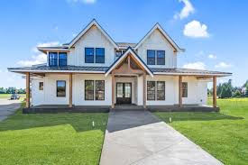

 <!DOCTYPE html>
<html lang="en">
<head>
    <meta charset="UTF-8">
    <meta name="viewport" content="width=device-width, initial-scale=1.0">
    <title>ABARCA</title>
    <link rel="stylesheet" href="style.css">
</head>
<body>
  
 
</body>
</html>
<body bgcolor="silver">
    
<h1><li> A Vision for the Future: Creating Convenience in a Complex Worldl </li></h1>

<h3><p>From a young age, I’ve always felt this intense drive to make the world more accessible, simpler, and convenient for everyone. I believe that life shouldn’t have to be as complicated as it sometimes seems. My ultimate goal is to build a system—an interconnected framework of solutions—that can help streamline day-to-day life. Whether it’s through technology, services, or even lifestyle improvements, I want to create a system that empowers people to navigate the modern world with ease and efficiency, making every task just a little bit smoother.</p></h3>
<h1><li>Diversifying for Impact: A Multibusiness Vision</li></h1>

<h3><p>As I grow in experience and expertise, I want to expand my impact by creating multiple businesses in different industries. I’ve always been fascinated by the idea of entrepreneurship, and I believe that real change happens when you approach challenges from different angles. My plan is to establish businesses in sectors ranging from tech and healthcare to entertainment and sustainable energy—each one addressing unique problems, but all connected by the same core principle: convenience. Each business will serve a distinct purpose, but together they will form a network of solutions that complement and support one another.</p></h3>
<h1><li>A Home That Brings Us Together: A Family’s Dream</li></h1>

<h3><p>No dream is complete without family, and one of my ultimate life goals is to build a home big enough to bring everyone together under one roof. I want a house that isn’t just a place to live but a space where memories are made, where laughter echoes through every room, and where my family can always find comfort and connection. This home will be designed to fit everyone—whether it’s for holidays, family gatherings, or just everyday life. It’ll be a place where we all feel at home, no matter how far apart we might be. Above all, this house will be a symbol of my success, a reminder that no matter how big my dreams get, they are always rooted in the people I love the most.</p></h3>
<h1><li>A Lifetime of Goals, All Built on the Same Foundation</li></h1>

<h3><p>At the end of the day, these goals aren’t just about success for me—they’re about creating a legacy. A system of convenience, a portfolio of thriving businesses, and a home filled with the people I care about the most: that’s what I see for my future. These goals aren’t separate dreams; they’re all interconnected, working together to build something greater than the sum of its parts. And with every step I take toward them, I’m not just working toward a better life for myself, but for everyone I’m lucky enough to share this journey with.</p></h3>
<h1 style="color: violet;" >THANK YOU SO MUCH FOR TAKING THE TIME TO READ ABOUT MY GOALS AND HOBBIES—I TRULY APPRECIATE YOUR INTEREST AND SUPPORT IN UNDERSTANDING THE VISION I HAVE FOR MY LIFE! </h1>
</body>


<body>
   <h2> <a href="index.html">Home</a><br>
    <a href="contact.html">My hobbies</a><br>
 
</body>